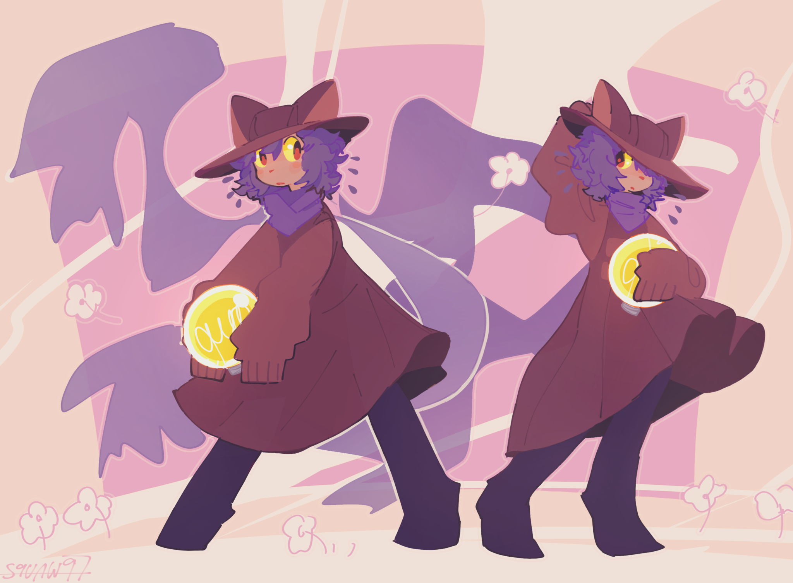
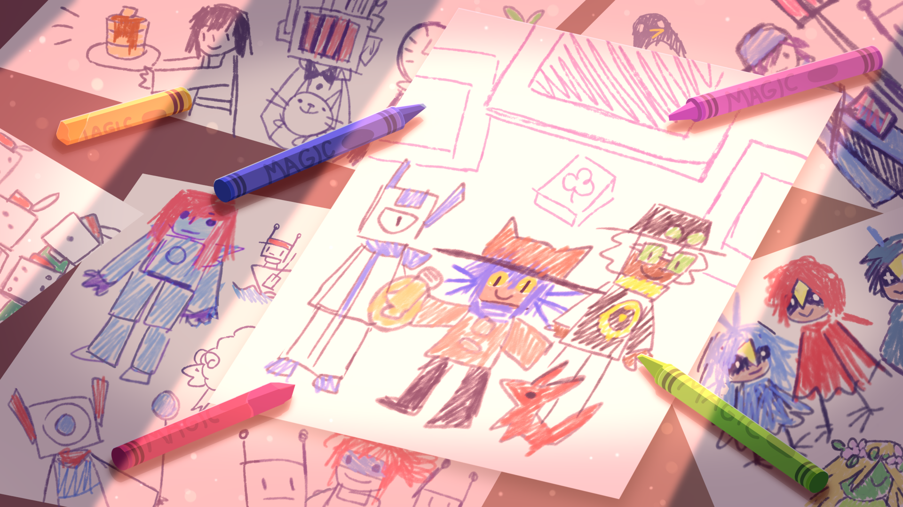
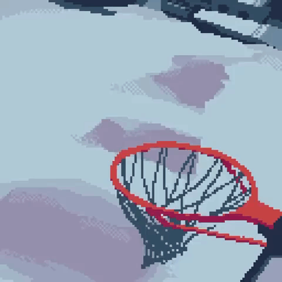

OneShot is a puzzle-adventure game with a very interesting story and cute aesthetic
The main character is called Niko, a cat that doesn't admit its a cat, which suddenly woke up in a mysterious world it's never seen before.

The main gimmick of this game is that it loves breaking the fourth wall. After being introduced to the main character, the game talks directly to the player. It's explained that Niko was trapped in this world by a mysterious force, and it is your job to free them.
On the way, you'll solve a bunch of puzzles, some of which go outside the game. Maybe the solution is from a file on your computer, or from moving a window around, they're all very unique.
You'll meet many cool and friendly characters, with a lot of diversity. The story is deep, complex, and might even make you shed a tear.
This is a game best played blind, so I'm not gonna explain much more. I think that it's worth playing for anyone who likes a good story, or a diffcult puzzle.

